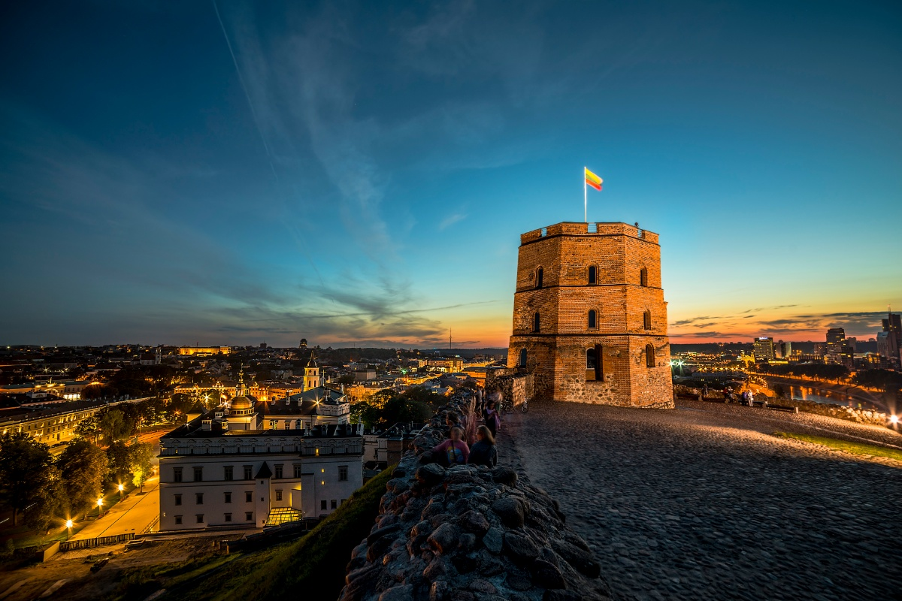
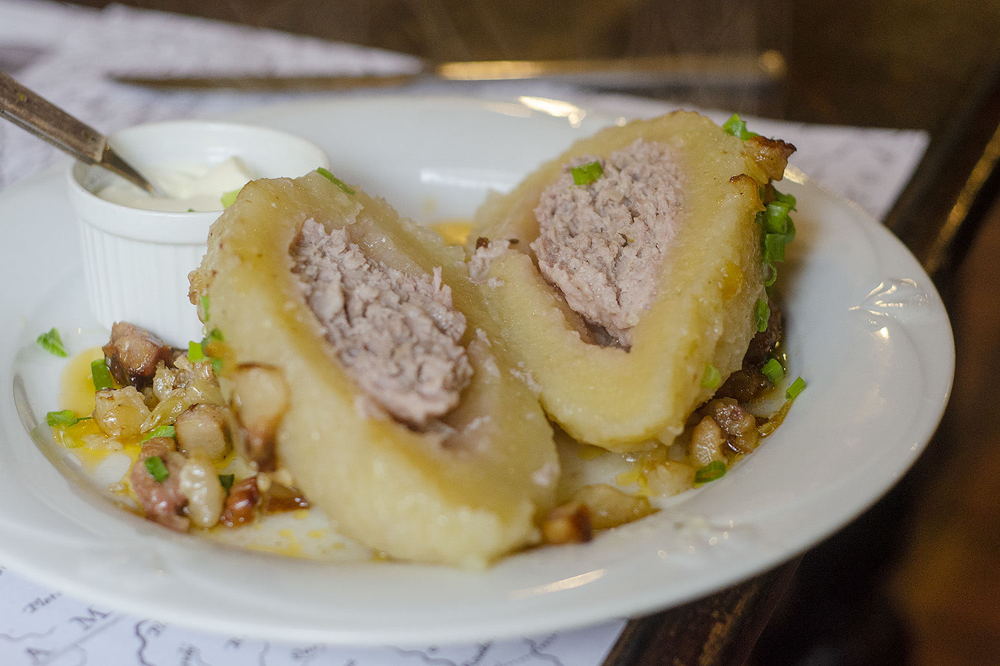

Destination Lithuania, an Eastern European country with a coastline at the Baltic Sea in west. It is the largest and most populous of the three Baltic states. The country is bordered by Belarus, Latvia, Poland, and Russia (Kaliningrad) and it shares a maritime border with Sweden. More information here
Lithuania

Lithuania, country of northeastern Europe, the southernmost and largest of the three Baltic states. Lithuania was a powerful empire that dominated much of eastern Europe in the 14th–16th centuries before becoming part of the Polish-Lithuanian confederation for the next two centuries. Aside from a brief period of independence from 1918 to 1940, Lithuania was occupied by Russia beginning in 1795, was controlled by Germany for a brief period during World War II, and was incorporated into the U.S.S.R. in 1944 as one of its constituent republics. On March 11, 1990, Lithuania declared its independence by a unanimous vote of its newly elected parliament. The new Soviet parliament acknowledged Lithuania’s independence on September 6, 1991.
More about history
Famous Places
Lithuania is famous for its landscapes, flatlands, abundant forests, lakes and marches. In addition, the seaside with its sandy beaches where amber may be found and the Curonian Spit with its impressive images and dunes attract tourists as well. The major places of resort in Lithuania include Palanga, Neringa, Druskininkai, and Birštonas. The nature is very important for Lithuania, so we do our best to cherish it; there are many national parks and landscape reserves that are worth being visited. At present, 5 national parks exist in Lithuania. They include: Trakai Historical National Park, the Aukštaitija National Park, the Dzūkija National Park, Samogitian National Park and the Curonian Spit National Park.
More Info
Find more on famous placesPopular Food
Lithuanians like to eat a lot and enjoy good food. Our traditional cuisine is rather simple, but has a variety of interesting dishes, many of them hearty and suitable for those cold Eastern European winters. Rye, potatoes, various meats, beetroots and turnips, mushrooms, berries, and diary products are often used as staple ingredients. You will find some of the most popular traditional Lithuanian foods, dishes and drinks on the page below.